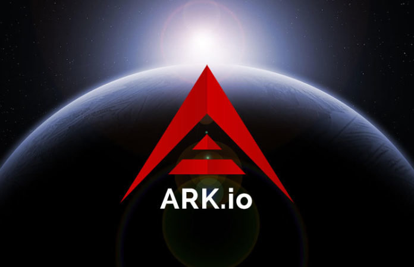

ARK provides users, developers, and startups with innovative blockchain technologies. We aim to create an entire ecosystem of linked chains and a virtual spiderweb of endless use-cases that make ARK highly flexible, adaptable, and scalable. ARK is a secure platform designed for mass adoption and will deliver the services that consumers want and developers need.
-Ark.io
ARK is a Delegated Proof-of-Stake (DPoS) cryptocurrency, where the effective "miners" (delegates) of the network are elected by the masses. Only the top 51 elected delegates are able to forge and validate new blocks for the blockchain.

Several friends and I recently got together and wrote a delegate proposal, and shortly thereafter were elected into the top 51 delegates. We've since been forging and validating blocks on the ARK blockchain, and have been working on new features behind-the-scenes for our voters and the community. We are in favor of keeping our real identities hidden for now, so I won't go into too much detail on what exactly we are doing.
Generally speaking, though, we have been doing small modifications to the ARK source code (written in JavaScript) and have been learning more about the detailed implementation of cryptocurrencies. I recently started working on a server communication script in Go that can be used to automatically use backup servers when our main forging server becomes unstable. The initial code can be seen
here. Using Nanomsg over SSH to send messages between the servers, the idea is that the main server will alert backup servers of its unstable state and a backup server will fill in while the main server repairs itself. This design works specifically for the problem when our main forging server gets out of sync with the blockchain and is able to detect that. Fortunately, that's the main problem we care about solving at this time. However, this design can be used in any system where either the main server can assess its own health or where another server can be the delegator of tasks and can observe each server's health remotely.
As we move forward as an ARK delegate, we will continue to make modifications to the ARK source code as we add special functionality, and we will continue developing stability tools for the backend as needed.
ink
tortab
eli5bot
zorkbot
twitchscraper
iamhiram
heckoomas